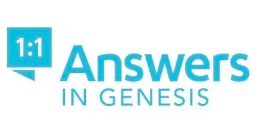

"YES, I AM THE GATE."
"THOSE WHO COME IN THROUGH ME
WILL BE SAVED." - John 10:8
Answers in Genesis - Ken Ham
If you wish to learn how to stand on the Authority of God's word from the very first verse of Genesis 1:1 through Revelation 22:21, then answers in genesis is for you. You might be skeptical of the Bible, then answers in genesis is for you. 1 Peter 3:15 - Instead, you must worship Christ as Lord of your life. And if someone asks about your hope as a believer, always be ready to explain it." Colossians 4:5-6 - "Live wisely among those who are not believers and make the most of every opportunity. Let your conversation be gracious and attractive, so that you will have the right response for everyone."
Living Waters - Ray Comfort
Learn how to share the Gospel using the 10 Commandments bringing knowledge of the law to bringing people to a face to face encounter with the truth's of God's word. Romans 1:16-17 - "For I am not ashamed of this Good News about Christ. It is the power of God at work, saving everyone who believes - the Jew first and also the Gentile. This Good News tells us how God makes us right in his sight. This is accomplished from start to finish by faith. As the scriptures say, "It is through faith that a righteous person has life.""
Harbingers Daily
Harbingers Daily is a Christian News Media Ministry that was started in 2014 before developing into a fully operating online news platform in 2019. Harbingers Daily works with ministries and writers across the globe to equip believers with a Biblically accurate understanding of world events and their significance.
Biblical Science Institute
This creation-themed science ministry exists to help you rationally defend the Christian worldview against those who claim that the Bible is unscientific. Critics assert that science has disproved the Bible, particularly the history recorded in the early chapters of Genesis. The Biblical Science Institute will equip Christians to logically refute such claims and to be encouraged that science confirms the Bible.
Get a Life Ministries
We believe in the soon return of our Lord and Savior Jesus Christ. Our mission is to share the gospel in any way possible to reach the lost and encourage the church to be watching and keeping our lives holy in anticipation of His return, through our online videos and DVD studies. Most of the media produced by Get A Life Ministries is offered free of charge either through downloads or online viewing. DVD quality video is available for free download on many studies with DVD's available in our catalog. What then is my reward? Just this: that in preaching the gospel I may offer it free of charge. - 1 Corinthians 9:18
Behold Israel- Amir Tsarfati
Behold Israel is a non-profit organization led by native Israeli Amir Tsarfati. Our mission is to provide reliable and accurate reporting on developments in Israel and the region. Amir’s live updates and teachings, based on God’s Written Word, sift out the truth on current events amidst global media bias against Israel.